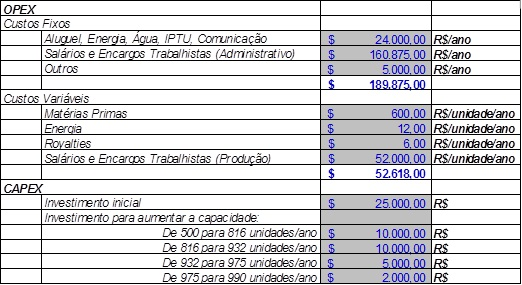
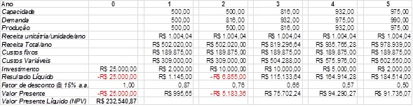
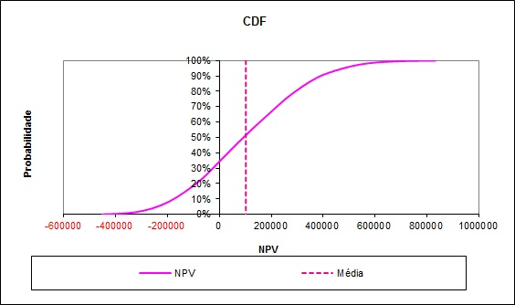

Nós estamos online, clique no canto inferior direito da tela e fale com nosso atendimento. Caso prefira o contato por e-mail, envie uma mensagem, em breve retornaremos.
Obrigado! Sua mensagem foi enviada com sucesso!
Oops! Não foi possível enviar o formulário, revise os campos e tente novamente.
Tomada de decisão sob incerteza também é Analytics
Blog /
Publicado em
January 10, 2022
Nos últimos anos tem-se visto no Mercado uma explosão de ofertas para serviços de Analytics. A maioria esmagadora desses serviços gira em torno de Business Intelligence e Machine Learning. Ocorre que Analytics não é só isso. Há um ramo muito importante chamado Tomada de Decisão sob Incerteza.
Na Ciência de Dados você tem dados históricos, usa-os para gerar um modelo preditivo, usa o modelo para fazer predições, e usa as predições para tomar decisões. Exemplo: você tem os dados históricos dos pedidos feitos pelos clientes, tem os dados históricos das variáveis macroeconômicas do país e da região etc., e usa esses dados para criar um modelo de Machine Learning e com ele estimar o volume de vendas no próximo trimestre, e com base nessa estimativa decidir a quantidade de insumos que irá comprar.
Na Tomada de Decisão sob Incerteza, pegando o exemplo acima, você parte de um modelo – tipicamente não criado por técnicas de Machine Learning, mas pela sua experiência de Subject Matter Expert –, e usando simulação computacional você calcula as probabilidades de os pedidos dos clientes ficarem dentro de algumas faixas, e com base nessas probabilidades você toma a suas decisões.
Você deve estar se perguntando: “ora, por que fazer simulação computacional se eu posso simplesmente usar a curva de tendência gerada pelo meu modelo, e com base nessa curva estimar o volume de pedidos do próximo trimestre?” A resposta é: porque não existe uma única curva de tendência. Trend-breakers podem fazer a curva de tendência mudar de direção; então, para cada trend-breaker, há pelo menos uma curva de tendência diferente. O que seria um trend-breaker no exemplo acima? A perda de um importante cliente, a perda de um importante pedido que está previsto de entrar etc.
Novamente você deve estar se perguntando: “ora, como vou adivinhar se vou perder um importante cliente ou um importante pedido?”. E a resposta é: você não vai “adivinhar”, você vai simular. Vai rodar milhares de cenários – milhares mesmo! – com diferentes combinações de trend breakers –, e no final vai obter uma distribuição de probabilidades, e vai usar essa distribuição de probabilidades para tomar suas decisões. Uma técnica que pode ser usada para gerar essas milhares de combinações de cenários é aSimulação de Monte Carlo.
Esse tipo de abordagem leva em consideração não-linearidades que seriam difíceis – senão impossíveis – de serem capturadas com a abordagem tradicional de Ciência de Dados. Não estou querendo dizer que em Ciência de Dados só se trabalha com modelos lineares – longe disso! Mas lá se olham para as não-linearidades passadas, que efetivamente se manifestaram nos dados, enquanto aqui se olham para as – potenciais – não-linearidades futuras.
Todo o restante deste artigo gira em torno do seguinte exemplo didático, e no final é fornecida uma planilha Excel para tangibilizar o exemplo. Na prática o Excel não é melhor ferramenta para esse tipo de aplicação, mas para um exemplo didático ele é ótimo e abrange o maior público, porque todo mundo mexe com Excel.
Exemplo Didático
Suponha que você se depare com a seguinte situação: decidir sobre um investimento para produzir um artigo (seja um software, seja um hardware, seja um artigo de vestimenta, não importa). Que risco você estaria disposto a correr nesse investimento em vez de deixar seu dinheiro aplicado no mercado financeiro? Em vez de aplicar seu capital em outro investimento com outro patamar de risco? Essas são perguntas para cuja resposta eu vou mostrar uma abordagem usando o conceito de VaR (“Value at Risk” – valor em risco). Adorarei um exemplo para embasar minha argumentação.
No exemplo a seguir, a análise será feita para um horizonte de 5 anos. Em outras palavras, o que queremos estimar é: ao final de 5 anos, qual é o retorno ($) esperado do investimento e, mais importante, qual é a probabilidade (%) de obtermos um retorno menor do que este?
Taxa de Retorno
A primeira coisa que você deve estabelecer para essa análise é a taxa de retorno anual desejada. Esse valor equivale à taxa de retorno (ou de juros, ou de desconto) que incentivaria você a “emprestar” seu capital para esse investimento. É razoável usar um valor que seja superior em X pontos percentuais ao da taxa anual mínima de retorno do mercado financeiro (no caso de você já dispor do capital), ou Y pontos percentuais acima do que os bancos lhe cobrariam de juros se você fosse pedir emprestado esse capital, ou seja lá que outro critério você adote para valorar seu dinheiro. No nosso exemplo usaremos o valor de 15% ao ano (a.a.). Basicamente, ao decidir usar o valor de 15%, estamos implicitamente dizendo que esse investimento só será atrativo se tiver um retorno de 15% ao ano, e que abaixo disso, nada feito, não interessa. Tão simples quanto isso.
Preço de Venda
Antigamente o preço de venda de um artigo era determinado pelo produtor: era o custo de produção, somado a impostos, somado ao frete, e somado a um valor de lucro arbitrado por ele. Mas isso acabou. Exceto talvez nos mercados monopolistas ou oligopolistas, atualmente quem determina o preço de venda é o próprio mercado. Então, esse é o segundo parâmetro que você deve estimar: quanto o mercado estaria disposto a pagar pelo seu artigo? No nosso exemplo, vamos supor que você fez uma pesquisa e determinou que o mercado estivesse disposto a pagar até R$100,00 por uma unidade do seu produto.
Demanda Esperada
Esse parâmetro é bastante subjetivo. Certamente você não tem uma bola de cristal para lhe ajudar a adivinhar qual será a demanda pelo seu produto. E se você está lendo este artigo, certamente você não é adepto de técnicas heterodoxas como búzios e tarô. Com técnicas ortodoxas, como o uso de séries temporais (históricas), você pode traçar curvas de tendência; ou, você pode tentar uma pesquisa de mercado; de qualquer jeito, você tem que estimar, de uma maneira que os americanos chamam "educated guess".
A boa notícia é que a técnica de simulação que vou mostrar lhe permitirá analisar diversos cenários de demanda, e em cada um deles o VaR do seu investimento será diferente. Caberá a você decidir qual dos cenários é o mais provável, qual é o menos provável, e escolher um cenário entre o pior e o melhor caso. No nosso exemplo, vamos supor que a demanda no primeiro ano será de 500 unidades, e crescerá a cada ano, dobrando ao final de 5 anos, mas seguindo um padrão de crescimento natural (K1 –K2e–n) com taxa decrescente:
Demanda esperada
Primeiro ano - 500 unidades
Segundo ano - 816 unidades
Terceiro ano - 932 unidades
Quarto ano - 975 unidades
Quinto ano - 990 unidades
OPEX e CAPEX
Você também deve estimar seus custos operacionais ou recorrentes (Operational Expenditures – OPEX) e seus custos de investimento (CAPEX – Capital Expenditures). No nosso exemplo esses custos foram estimados conforme abaixo:

Os itens que compõem o CAPEX e o OPEX podem ser expressos em função do número de unidades produzidas por ano, ou em função de incrementos (saltos), como no exemplo acima. Esses “saltos” criam não-linearidades cujo efeito no resultado líquido final somente pode ser captado através de simulações, como por exemplo através dométodo Monte Carloque iremos demonstrar aqui.
Estas não-linearidades são uma das causas do que é conhecido como "Flaw of Avarages" (“Falha da Médias” – uma corruptela da expressão “Law of Averages” – Lei das Médias). Se o seu mundo é perfeito e não-linearidades não são esperadas, não perca seu tempo com a técnica mostrada aqui: calcule tudo pelas médias (média da demanda, média dos custos etc.) e no final você terá o valor esperado do resultado líquido, sem precisar simular nada.
Mas, voltando para o nosso mundo imperfeito. O Fator de Incerteza estabelece a faixa de variação dos parâmetros de entrada, para mais e para menos, em torno do valor central. No nosso exemplo o Fator de Incerteza será aplicado ao parâmetro mais subjetivo, que é a demanda esperada. Em outras palavras, ao fixarmos um Fator de Incerteza em 100% admitiremos que a demanda em cada ano poderá variar 100% para menos ou para mais em torno do valor esperado de demanda daquele ano (lembre-se, já tratamos das demandas esperadas anuais mais acima).
Após rodarmos milhares de simulações, variando aleatoriamente a demanda em cada ano (com a faixa de variação determinada pelo Fator de Incerteza), poderemos analisar como se comporta o retorno esperado do investimento e a probabilidade de obtermos um retorno negativo ao final do quinto ano (ficarmos no prejuízo).
Há várias distribuições de probabilidades que podem ser usadas para gerar aleatoriamente as demandas anuais na simulação. No nosso exemplo usaremos a distribuição mais simples, que é a Uniforme. Contudo você poderá modificar o exemplo para usar a distribuição Normal (Gaussiana), a Triangular, ou outra qualquer que prefira.
Por que estou usando a distribuição Uniforme? Basicamente por 3 motivos: a) nela, todos os valores de demanda têm a mesma chance (probabilidade) de ocorrer; b) é a mais fácil de ser usada no Excel: a função ALEATORIO() gera diretamente valores uniformemente distribuídos, que com simples operações de soma e subtração podem gerar valores aleatórios de demanda, uniformemente distribuídos em torno dos valores esperados anuais que já conhecemos; c) é a mais fácil de ser explicada, pois não requer que entremos em detalhes acerca de variância e desvio-padrão.
Continuando com nosso exemplo do investimento hipotético, faremos agora a análise estática do fluxo de caixa desse investimento ao longo dos 5 anos. Eu chamo de análise estática porque nela os parâmetros de entrada permanecem fixos, ao contrário de uma análise dinâmica, que é produto de uma simulação onde esses parâmetros são variados milhares de vezes, aleatoriamente.

Observe na figura acima que analisamos do ano zero ao ano cinco. No ano zero ainda não estamos produzindo, apenas investindo para começar a produzir no ano seguinte. Em cada ano, a capacidade de produção está limitada pelos investimentos feitos no ano anterior. A demanda de cada ano é aleatória, mas para a análise estática você pode considerar que as demandas anuais terão os valores estimados (esperados) by-design.
A produção em cada ano é igual à demanda, se a demanda for menor que a capacidade instalada da planta; ou igual à capacidade instalada da planta, se a demanda daquele ano for maior do que a capacidade instalada.
A receita total num dado ano é igual ao preço de venda unitário multiplicado pela quantidade produzida naquele ano (produção), abatendo os impostos.
Os custos fixos e variáveis anuais, e os investimentos anuais, são aqueles que discutimos anteriormente.
O resultado líquido num dado ano é a receita total daquele ano debitada dos custos e dos investimentos daquele ano. Mas esse resultado precisa ser corrigido pela taxa de desconto para obtermos o respectivo valor presente líquido.
O valor presente líquido (Net Present Value) total ao final dos 5 anos é a soma dos valores presentes líquidos ano-a-ano. Esse é o principal resultado da análise estática. Esse resultado só é válido para aqueles valores de demanda esperada que foram usados na análise estática (ou seja, no Mundo Perfeito). Mas lembre-se que temos um Fator de Incerteza, o qual estabelece que as demandas podem variar 100% para mais ou para menos em torno dos valores esperados de demanda anuais.
Se não houvesse não-linearidades, poderíamos afirmar que o NPV total encontrado é o NVP médio esperado, já que usamos os valores médios de demanda. Mas lembre-se que no nosso exemplo podem existir "saltos" nos investimentos anuais para aumento de capacidade, e esses aumentos de capacidade dependem das demandas anuais, que na prática são variáveis aleatórias. Resultado: o surgimento de não-linearidades. Então, no Mundo Real a análise estática não diz muita coisa. Além disso, apenas com a análise estática não temos como estimar a probabilidade de obtermos um NPV menor do que um certo valor (por exemplo: menor do que zero). Então temos que lançar mão de simulações, como por exemplo através do Método de Monte Carlo, ou usando softwares especiais para essa finalidade.
Agora vem a parte maior e mais interessante: a simulação propriamente dita e o cálculo do VaR – Value at Risk.
Pois bem, a primeira coisa que vamos fazer é modificar a Análise Estática fazendo os valores de demanda em cada ano se tornarem variáveis aleatórias. No Excel isso poderia ser feito, por exemplo, assim:
Onde Demanda1 a célula que contém o valor médio (esperado) da demanda no ano 1, Demanda2 é a célula que contém o valor médio (esperado) da demanda no ano 2, e assim sucessivamente. FatorDeIncerteza é a célula que contém o já mencionado Fator de Incerteza (que no nosso exemplo é 100%). A função ALEATÓRIO(), como já disse, gera valores randômicos distribuídos uniformemente entre 0 e 1. Os resultados das expressões acima geram valores randômicos centrados e uniformemente distribuídos em torno dos valores esperados de demanda.
No Excel, a cada vez que pressionarmos a tecla F9, novos valores de demanda para cada ano serão aleatoriamente gerados. De novo: se quiser outro tipo de distribuição de probabilidades que não seja a Uniforme, a fórmula complica um pouco (não vamos entrar nos detalhes aqui). A escolha da distribuição adequada é tanto uma arte como uma técnica.
Esse passo é só a metade do caminho. Agora temos que dar um jeito de repetir a geração dos valores aleatórios de demanda milhares de vezes de forma automática. A forma mais simples de fazer isso sem precisar de programação é fazendo uso do recurso "Tabela de Dados" (Data Table) do Excel (menu "Dados" > "Teste de Hipóteses" > "Tabela de Dados").
Não é objetivo deste artigo ensinar a usar esse recurso (o qual é um dos mais obscuros do Excel), mas a documentação do Excel é relativamente bem elaborada sobre ele. Basicamente o que o recurso faz é gerar tantos valores quantos se queira e guardar o resultado do Valor Presente Líquido (NPV) resultante para cada combinação aleatória de demandas anuais. Isso é uma simulação de Monte Carlo. Cada vez que você clicar em F9 uma nova batelada de valores é gerada (uma nova simulação é rodada). Na planilha que fornecemos como exemplo, 3000 (três mil) novos valores são gerados a cada rodada.
Tendo armazenado todos os valores de NPV (no nosso exemplo, 3000 valores), podemos estudar como esses valores se distribuíram estatisticamente, traçar a Função de Distribuição Cumulativa (CDF) desses valores, achar a média, o desvio-padrão etc. (ou seja, achar os "estimadores"). O interessante é que por mais que repitamos as simulações, essa curva CDF, bem como a média e o desvio-padrão não mudarão muito de uma simulação para outra. Quanto maior for a quantidade de amostras geradas por simulação (no nosso caso: 3000), menos eles mudarão de uma simulação para outra. No limite, se gerássemos um número infinito de amostras em cada simulação, a mudança seria nenhuma de uma simulação para outra.
Na figura abaixo eu mostro o resultado que obtivemos com os parâmetros descritos nas seções anteriores. A curva CDF está bem contínua nesse exemplo, mas é comum ela aparecer com descontinuidades ("saltos") decorrentes das não-linearidades que porventura existam no sistema. No nosso exemplo as não linearidades não tiveram muito efeito na CDF: acredite, isso foi uma exceção.

Observe que a média dos NPV, ou seja, o Valor Presente Líquido esperado ao final de 5 anos, está em torno de R$100.000,00 (nesta rodada ele foi precisamente R$ 110.110,98). Pelo gráfico acima também podemos constatar que a probabilidade de obtermos um NPV negativo ao final de 5 anos é em torno de 35%. O gráfico não mostra, mas pela planilha é possível constatar que temos 95% de chance de termos um NPV entre -R$280.000,00 e +R$545.000,00. O nosso VaR está em 35%, porque temos 35% de chances de ficarmos no prejuízo ao final dos 5 anos.
O ideal seria que nossa curva CDF se movesse para direita, porque assim nosso VaR diminuiria, podendo até tender a 0% (lucro quase garantido). Como fazer isso? Uma forma seria aumentar o nosso preço de venda unitário (se o mercado permitisse); outra forma seria reduzir os nossos custos. Fazendo essas mudanças nos parâmetros e repetindo a simulação, podemos obter estimativas de como ficariam os nossos resultados ao final dos 5 anos em cada cenário.
Conforme mencionamos, segue o link para a planilha didática: VaR-Exemplo.
Com exceção da aba "MonteCarlo", todas as demais abas dessa planilha são autoexplicativas. Na aba "MonteCarlo" é onde está a estrutura de dados Data Table do Excel (células D7 a D3009).
Sua organização tem necessidades análogas à descrita acima? Temos a expertise para lhe ajudar.
Créditos: Essa planilha foi baseada (com modificações) em materiais do Prof. Richard de Neufville (MIT).


.jpg)

 1.svg)